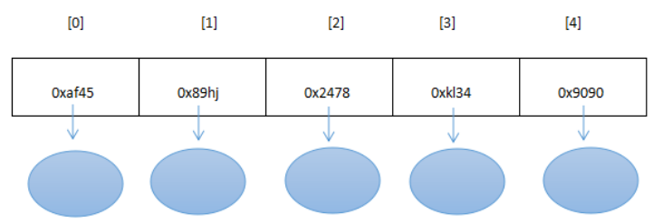
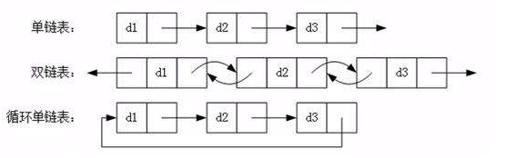
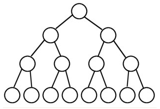
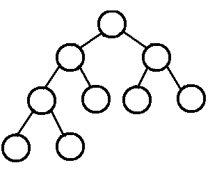

第14章_数据结构与集合源码
本章专题与脉络

1. 数据结构剖析
我们举一个形象的例子来理解数据结构的作用：
战场：程序运行所需的软件、硬件环境
敌人：项目或模块的功能需求
指挥官：编写程序的程序员
士兵和装备：一行一行的代码
战术和策略：数据结构

上图：没有战术，打仗事倍功半
上图：有战术，打仗事半功倍
总结：简单来说，数据结构，就是一种程序设计优化的方法论，研究数据的逻辑结构和物理结构以及它们之间相互关系，并对这种结构定义相应的运算，目的是加快程序的执行速度、减少内存占用的空间。
具体研究对象如下：
1.1 研究对象一：数据间逻辑关系
数据的逻辑结构指反映数据元素之间的逻辑关系，而与数据的存储无关，是独立于计算机的。
- 集合结构：数据结构中的元素之间除了“
同属一个集合” 的相互关系外，别无其他关系。集合元素之间没有逻辑关系。 - 线性结构：数据结构中的元素存在
一对一的相互关系。比如：排队。结构中必须存在唯一的首元素和唯一的尾元素。体现为：一维数组、链表、栈、队列 - 树形结构：数据结构中的元素存在
一对多的相互关系。比如：家谱、文件系统、组织架构 - 图形结构：数据结构中的元素存在
多对多的相互关系。比如：全国铁路网、地铁图
1.2 研究对象二：数据的存储结构（或物理结构）
数据的物理结构/存储结构：包括数据元素的表示和关系的表示。数据的存储结构是逻辑结构用计算机语言的实现，它依赖于计算机语言。
结构1：顺序结构
顺序结构就是使用一组连续的存储单元依次存储逻辑上相邻的各个元素。
优点： 只需要申请存放数据本身的内存空间即可，支持下标访问，也可以实现随机访问。
缺点： 必须静态分配连续空间，内存空间的利用率比较低。插入或删除可能需要移动大量元素，效率比较低
结构2：链式结构
- 不使用连续的存储空间存放结构的元素，而是为每一个元素构造一个节点。节点中除了存放数据本身以外，还需要存放指向下一个节点的指针。
- 优点：不采用连续的存储空间导致内存空间利用率比较高，克服顺序存储结构中预知元素个数的缺点。插入或删除元素时，不需要移动大量的元素。
- 缺点：需要额外的空间来表达数据之间的逻辑关系，不支持下标访问和随机访问。
结构3：索引结构
- 除建立存储节点信息外，还建立附加的
索引表来记录每个元素节点的地址。索引表由若干索引项组成。索引项的一般形式是：（关键字，地址）。 - 优点：用节点的索引号来确定结点存储地址，检索速度快。
- 缺点： 增加了附加的索引表，会占用较多的存储空间。在增加和删除数据时要修改索引表，因而会花费较多的时间。
结构4：散列结构
- 根据元素的关键字直接计算出该元素的存储地址，又称为Hash存储。
- 优点：检索、增加和删除结点的操作都很快。
- 缺点：不支持排序，一般比用线性表存储需要更多的空间，并且记录的关键字不能重复。
1.3 研究对象三：运算结构
施加在数据上的运算包括运算的定义和实现。运算的定义是针对逻辑结构的，指出运算的功能；运算的实现是针对存储结构的，指出运算的具体操作步骤。
- 分配资源，建立结构，释放资源
- 插入和删除
- 获取和遍历
- 修改和排序
1.4 小结

2. 一维数组
2.1 数组的特点
- 在Java中，数组是用来存放同一种数据类型的集合，注意只能存放同一种数据类型。
//只声明了类型和长度
数据类型[] 数组名称 = new 数据类型[数组长度];
//声明了类型，初始化赋值，大小由元素个数决定
数据类型[] 数组名称 = {数组元素1，数组元素2，......}例如：整型数组

例如：对象数组
- 物理结构特点：
- 申请内存：一次申请一大段连续的空间，一旦申请到了，内存就固定了。
- 不能动态扩展(初始化给大了，浪费；给小了，不够用)，插入快，删除和查找慢。
- 存储特点：所有数据存储在这个连续的空间中，数组中的每一个元素都是一个具体的数据（或对象），所有数据都紧密排布，不能有间隔。
- 具体的，如下图：

2.2 自定义数组
package com.atguigu01.overview.array;
/**
* @author 尚硅谷-宋红康
* @create 14:39
*/
class Array {
private Object[] elementData;
private int size;
public Array(int capacity){
elementData = new Object[capacity];
}
/**
* 添加元素
* @param value
*/
public void add(Object value){
if(size >= elementData.length){
throw new RuntimeException("数组已满，不可添加");
}
elementData[size] = value;
size++;
}
/**
* 查询元素value在数组中的索引位置
* @param value
* @return
*/
public int find(Object value){
for (int i = 0; i < size; i++) {
if(elementData[i].equals(value)){
return i;
}
}
return -1;
}
/**
* 从当前数组中移除首次出现的value元素
* @param value
* @return
*/
public boolean delete(Object value){
int index = find(value);
if(index == -1){
return false;
}
for(int i = index;i < size - 1;i++){
elementData[i] = elementData[i + 1];
}
elementData[size - 1] = null;
size--;
return true;
}
/**
* 将数组中首次出现的oldValue替换为newValue
* @param oldValue
* @param newValue
* @return
*/
public boolean update(Object oldValue,Object newValue){
int index = find(oldValue);
if(index == -1){
return false;
}
elementData[index] = newValue;
return true;
}
/**
* 遍历数组中所有数据
*/
public void print(){
System.out.print("{");
for (int i = 0; i < size; i++) {
if(i == size - 1){
System.out.println(elementData[i] + "}");
break;
}
System.out.print(elementData[i] + ",");
}
}
}
//测试类
public class ArrayTest {
public static void main(String[] args) {
Array arr = new Array(10);
arr.add(123);
arr.add("AA");
arr.add(345);
arr.add(345);
arr.add("BB");
arr.delete(345);
arr.update(345,444);
arr.print();
}
}3. 链表
3.1 链表的特点
逻辑结构：线性结构
物理结构：不要求连续的存储空间
存储特点：链表由一系列结点node（链表中每一个元素称为结点）组成，结点可以在代码执行过程中动态创建。每个结点包括两个部分：一个是存储数据元素的
数据域，另一个是存储下一个结点地址的指针域。
- 常见的链表结构有如下的形式：


3.2 自定义链表
3.2.1 自定义单向链表
/*
单链表中的节点。
节点是单向链表中基本的单元。
每一个节点Node都有两个属性：
一个属性：是存储的数据。
另一个属性：是下一个节点的内存地址。
*/
public class Node {
// 存储的数据
Object data;
// 下一个节点的内存地址
Node next;
public Node(){
}
public Node(Object data, Node next){
this.data = data;
this.next = next;
}
}
/*
链表类(单向链表)
*/
public class Link<E> {
// 头节点
Node header;
private int size = 0;
public int size(){
return size;
}
// 向链表中添加元素的方法（向末尾添加）
public void add(E data){
//public void add(Object data){
// 创建一个新的节点对象
// 让之前单链表的末尾节点next指向新节点对象。
// 有可能这个元素是第一个，也可能是第二个，也可能是第三个。
if(header == null){
// 说明还没有节点。
// new一个新的节点对象，作为头节点对象。
// 这个时候的头节点既是一个头节点，又是一个末尾节点。
header = new Node(data, null);
}else {
// 说明头不是空！
// 头节点已经存在了！
// 找出当前末尾节点，让当前末尾节点的next是新节点。
Node currentLastNode = findLast(header);
currentLastNode.next = new Node(data, null);
}
size++;
}
/**
* 专门查找末尾节点的方法。
*/
private Node findLast(Node node) {
if(node.next == null) {
// 如果一个节点的next是null
// 说明这个节点就是末尾节点。
return node;
}
// 程序能够到这里说明：node不是末尾节点。
return findLast(node.next); // 递归算法！
}
/*// 删除链表中某个数据的方法
public void remove(Object obj){
//略
}
// 修改链表中某个数据的方法
public void modify(Object newObj){
//略
}
// 查找链表中某个元素的方法。
public int find(Object obj){
//略
}*/
}3.2.2 自定义双向链表

/*
双向链表中的节点。
*/
public class Node<E> {
Node prev;
E data;
Node next;
Node(Node prev, E data, Node next) {
this.prev = prev;
this.data = data;
this.next = next;
}
}/**
* 链表类(双向链表)
* @author 尚硅谷-宋红康
* @create 15:05
*/
public class MyLinkedList<E> implements Iterable<E>{
private Node first; //链表的首元素
private Node last; //链表的尾元素
private int total;
public void add(E e){
Node newNode = new Node(last, e, null);
if(first == null){
first = newNode;
}else{
last.next = newNode;
}
last = newNode;
total++;
}
public int size(){
return total;
}
public void delete(Object obj){
Node find = findNode(obj);
if(find != null){
if(find.prev != null){
find.prev.next = find.next;
}else{
first = find.next;
}
if(find.next != null){
find.next.prev = find.prev;
}else{
last = find.prev;
}
find.prev = null;
find.next = null;
find.data = null;
total--;
}
}
private Node findNode(Object obj){
Node node = first;
Node find = null;
if(obj == null){
while(node != null){
if(node.data == null){
find = node;
break;
}
node = node.next;
}
}else{
while(node != null){
if(obj.equals(node.data)){
find = node;
break;
}
node = node.next;
}
}
return find;
}
public boolean contains(Object obj){
return findNode(obj) != null;
}
public void update(E old, E value){
Node find = findNode(old);
if(find != null){
find.data = value;
}
}
@Override
public Iterator<E> iterator() {
return new Itr();
}
private class Itr implements Iterator<E>{
private Node<E> node = first;
@Override
public boolean hasNext() {
return node!=null;
}
@Override
public E next() {
E value = node.data;
node = node.next;
return value;
}
}
}自定义双链表测试：
package com.atguigu.list;
public class MyLinkedListTest {
public static void main(String[] args) {
MyLinkedList<String> my = new MyLinkedList<>();
my.add("hello");
my.add("world");
my.add(null);
my.add(null);
my.add("java");
my.add("java");
my.add("atguigu");
System.out.println("一共有：" + my.size());
System.out.println("所有元素：");
for (String s : my) {
System.out.println(s);
}
System.out.println("-------------------------------------");
System.out.println("查找java,null,haha的结果：");
System.out.println(my.contains("java"));
System.out.println(my.contains(null));
System.out.println(my.contains("haha"));
System.out.println("-------------------------------------");
System.out.println("替换java,null后：");
my.update("java","JAVA");
my.update(null,"songhk");
System.out.println("所有元素：");
for (String s : my) {
System.out.println(s);
}
System.out.println("-------------------------------------");
System.out.println("删除hello，JAVA,null，atguigu后：");
my.delete("hello");
my.delete("JAVA");
my.delete(null);
my.delete("atguigu");
System.out.println("所有元素：");
for (String s : my) {
System.out.println(s);
}
}
}4. 栈
4.1 栈的特点
栈（Stack）又称为堆栈或堆叠，是限制仅在表的一端进行插入和删除运算的线性表。
栈按照
先进后出(FILO,first in last out)的原则存储数据，先进入的数据被压入栈底，最后的数据在栈顶。每次删除（退栈）的总是删除当前栈中最后插入（进栈）的元素，而最先插入的是被放在栈的底部，要到最后才能删除。
核心类库中的栈结构有Stack和LinkedList。
- Stack就是顺序栈，它是Vector的子类。
- LinkedList是链式栈。
体现栈结构的操作方法：
- peek()方法：查看栈顶元素，不弹出
- pop()方法：弹出栈
- push(E e)方法：压入栈
时间复杂度:
- 索引:
O(n) - 搜索:
O(n) - 插入:
O(1) - 移除:
O(1)
- 索引:
图示：

4.2 Stack使用举例
/**
* @author 尚硅谷-宋红康
* @create 15:44
*/
public class TestStack {
/*
* 测试Stack
* */
@Test
public void test1(){
Stack<Integer> list = new Stack<>();
list.push(1);
list.push(2);
list.push(3);
System.out.println("list = " + list);
System.out.println("list.peek()=" + list.peek());
System.out.println("list.peek()=" + list.peek());
System.out.println("list.peek()=" + list.peek());
/*
System.out.println("list.pop() =" + list.pop());
System.out.println("list.pop() =" + list.pop());
System.out.println("list.pop() =" + list.pop());
System.out.println("list.pop() =" + list.pop());//java.util.NoSuchElementException
*/
while(!list.empty()){
System.out.println("list.pop() =" + list.pop());
}
}
/*
* 测试LinkedList
* */
@Test
public void test2(){
LinkedList<Integer> list = new LinkedList<>();
list.push(1);
list.push(2);
list.push(3);
System.out.println("list = " + list);
System.out.println("list.peek()=" + list.peek());
System.out.println("list.peek()=" + list.peek());
System.out.println("list.peek()=" + list.peek());
/*
System.out.println("list.pop() =" + list.pop());
System.out.println("list.pop() =" + list.pop());
System.out.println("list.pop() =" + list.pop());
System.out.println("list.pop() =" + list.pop());//java.util.NoSuchElementException
*/
while(!list.isEmpty()){
System.out.println("list.pop() =" + list.pop());
}
}
}4.3 自定义栈
public class MyStack {
// 向栈当中存储元素，我们这里使用一维数组模拟。存到栈中，就表示存储到数组中。
// 为什么选择Object类型数组？因为这个栈可以存储java中的任何引用类型的数据
private Object[] elements;
// 栈帧，永远指向栈顶部元素
// 那么这个默认初始值应该是多少。注意：最初的栈是空的，一个元素都没有。
//private int index = 0; // 如果index采用0，表示栈帧指向了顶部元素的上方。
//private int index = -1; // 如果index采用-1，表示栈帧指向了顶部元素。
private int index;
/**
* 无参数构造方法。默认初始化栈容量10.
*/
public MyStack() {
// 一维数组动态初始化
// 默认初始化容量是10.
this.elements = new Object[10];
// 给index初始化
this.index = -1;
}
/**
* 压栈的方法
* @param obj 被压入的元素
*/
public void push(Object obj) throws Exception {
if(index >= elements.length - 1){
//方式1：
//System.out.println("压栈失败，栈已满！");
//return;
//方式2：
throw new Exception("压栈失败，栈已满！");
}
// 程序能够走到这里，说明栈没满
// 向栈中加1个元素，栈帧向上移动一个位置。
index++;
elements[index] = obj;
System.out.println("压栈" + obj + "元素成功，栈帧指向" + index);
}
/**
* 弹栈的方法，从数组中往外取元素。每取出一个元素，栈帧向下移动一位。
* @return
*/
public Object pop() throws Exception {
if (index < 0) {
//方式1：
//System.out.println("弹栈失败，栈已空！");
//return;
//方式2：
throw new Exception("弹栈失败，栈已空！");
}
// 程序能够执行到此处说明栈没有空。
Object obj = elements[index];
System.out.print("弹栈" + obj + "元素成功，");
elements[index] = null;
// 栈帧向下移动一位。
index--;
return obj;
}
// set和get也许用不上，但是你必须写上，这是规矩。你使用IDEA生成就行了。
// 封装：第一步：属性私有化，第二步：对外提供set和get方法。
public Object[] getElements() {
return elements;
}
public void setElements(Object[] elements) {
this.elements = elements;
}
public int getIndex() {
return index;
}
public void setIndex(int index) {
this.index = index;
}
}
5. 队列
队列（Queue）是只允许在一端进行插入，而在另一端进行删除的运算受限的线性表。
队列是逻辑结构，其物理结构可以是数组，也可以是链表。
队列的修改原则：队列的修改是依
先进先出（FIFO）的原则进行的。新来的成员总是加入队尾（即不允许”加塞”），每次离开的成员总是队列头上的（不允许中途离队），即当前”最老的”成员离队。图示：

6. 树与二叉树
6.1 树的理解

专有名词解释：
结点：树中的数据元素都称之为结点
根节点：最上面的结点称之为根，一颗树只有一个根且由根发展而来，从另外一个角度来说，每个结点都可以认为是其子树的根
父节点：结点的上层结点，如图中，结点K的父节点是E、结点L的父节点是G
子节点：节点的下层结点，如图中，节点E的子节点是K节点、节点G的子节点是L节点
兄弟节点：具有相同父节点的结点称为兄弟节点，图中F、G、H互为兄弟节点
结点的度数：每个结点所拥有的子树的个数称之为结点的度，如结点B的度为3
树叶：度数为0的结点，也叫作终端结点，图中D、K、F、L、H、I、J都是树叶
非终端节点（或分支节点）：树叶以外的节点，或度数不为0的节点。图中根、A、B、C、E、G都是
树的深度（或高度）：树中结点的最大层次数，图中树的深度为4
结点的层数：从根节点到树中某结点所经路径上的分支树称为该结点的层数，根节点的层数规定为1，其余结点的层数等于其父亲结点的层数+1
同代：在同一棵树中具有相同层数的节点
6.2 二叉树的基本概念
二叉树（Binary tree）是树形结构的一个重要类型。二叉树特点是每个结点最多只能有两棵子树，且有左右之分。许多实际问题抽象出来的数据结构往往是二叉树形式，二叉树的存储结构及其算法都较为简单，因此二叉树显得特别重要。
6.3 二叉树的遍历
前序遍历：中左右（根左右）
即先访问根结点，再前序遍历左子树，最后再前序遍历右子树。前序遍历运算访问二叉树各结点是以根、左、右的顺序进行访问的。
中序遍历：左中右（左根右）
即先中序遍历左子树，然后再访问根结点，最后再中序遍历右子树。中序遍历运算访问二叉树各结点是以左、根、右的顺序进行访问的。
后序遍历：左右中（左右根）
即先后序遍历左子树，然后再后序遍历右子树，最后访问根结点。后序遍历运算访问二叉树各结点是以左、右、根的顺序进行访问的。
前序遍历：ABDHIECFG
中序遍历：HDIBEAFCG
后序遍历：HIDEBFGCA
6.4 经典二叉树
1、满二叉树： 除最后一层无任何子节点外，每一层上的所有结点都有两个子结点的二叉树。 第n层的结点数是2的n-1次方，总的结点个数是2的n次方-1

2、完全二叉树： 叶结点只能出现在最底层的两层，且最底层叶结点均处于次底层叶结点的左侧。

3、二叉排序/查找/搜索树：即为BST (binary search/sort tree)。满足如下性质：
（1）若它的左子树不为空，则左子树上所有结点的值均小于它的根节点的值；
（2）若它的右子树上所有结点的值均大于它的根节点的值；
（3）它的左、右子树也分别为二叉排序/查找/搜索树。
对二叉查找树进行中序遍历，得到有序集合。便于检索。
4、平衡二叉树：（Self-balancing binary search tree，AVL）首先是二叉排序树，此外具有以下性质：
（1）它是一棵空树或它的左右两个子树的高度差的绝对值不超过1
（2）并且左右两个子树也都是一棵平衡二叉树
（3）不要求非叶节点都有两个子结点
平衡二叉树的目的是为了减少二叉查找树的层次，提高查找速度。平衡二叉树的常用实现有红黑树、AVL、替罪羊树、Treap、伸展树等。
6、红黑树：即Red-Black Tree。红黑树的每个节点上都有存储位表示节点的颜色，可以是红(Red)或黑(Black)。
红黑树是一种自平衡二叉查找树，是在计算机科学中用到的一种数据结构，它是在 1972 年由 Rudolf Bayer 发明的。红黑树是复杂的，但它的操作有着良好的最坏情况运行时间，并且在实践中是高效的：它可以在 O(log n)时间内做查找，插入和删除， 这里的 n 是树中元素的数目。
红黑树的特性：
每个节点是红色或者黑色
根节点是黑色
每个叶子节点（NIL）是黑色。（注意：这里叶子节点，是指为空(NIL或NULL)的叶子节点）
每个红色节点的两个子节点都是黑色的。(从每个叶子到根的所有路径上不能有两个连续的红色节点)
从任一节点到其每个叶子的所有路径都包含相同数目的黑色节点（确保没有一条路径会比其他路径长出2倍）

当我们插入或删除节点时，可能会破坏已有的红黑树，使得它不满足以上5个要求，那么此时就需要进行处理，使得它继续满足以上的5个要求：
1、recolor ：将某个节点变红或变黑
2、rotation ：将红黑树某些结点分支进行旋转（左旋或右旋）
红黑树可以通过红色节点和黑色节点尽可能的保证二叉树的平衡。主要是用它来存储有序的数据，它的时间复杂度是O(logN)，效率非常之高。
6.5 二叉树及其结点的表示
普通二叉树：
public class BinaryTree<E>{
private TreeNode root; //二叉树的根结点
private int total;//结点总个数
private class TreeNode{
//至少有以下几个部分
TreeNode parent;
TreeNode left;
E data;
TreeNode right;
public TreeNode(TreeNode parent, TreeNode left, E data, TreeNode right) {
this.parent = parent;
this.left = left;
this.data = data;
this.right = right;
}
}
}TreeMap红黑树：
public class TreeMap<K,V> {
private transient Entry<K,V> root;
private transient int size = 0;
static final class Entry<K,V> implements Map.Entry<K,V> {
K key;
V value;
Entry<K,V> left;
Entry<K,V> right;
Entry<K,V> parent;
boolean color = BLACK;
/**
* Make a new cell with given key, value, and parent, and with
* {@code null} child links, and BLACK color.
*/
Entry(K key, V value, Entry<K,V> parent) {
this.key = key;
this.value = value;
this.parent = parent;
}
}
}7. List接口分析
7.1 List接口特点
- List集合所有的元素是以一种
线性方式进行存储的，例如，存元素的顺序是11、22、33。那么集合中，元素的存储就是按照11、22、33的顺序完成的）。 - 它是一个元素
存取有序的集合。即元素的存入顺序和取出顺序有保证。 - 它是一个
带有索引的集合，通过索引就可以精确的操作集合中的元素（与数组的索引是一个道理）。 - 集合中可以有
重复的元素，通过元素的equals方法，来比较是否为重复的元素。

注意：
List集合关心元素是否有序，而不关心是否重复，请大家记住这个原则。例如“张三”可以领取两个号。
- List接口的主要实现类
- ArrayList：动态数组
- Vector：动态数组
- LinkedList：双向链表
- Stack：栈
7.2 动态数组ArrayList与Vector
Java的List接口的实现类中有两个动态数组的实现：ArrayList 和 Vector。
7.2.1 ArrayList与Vector的区别
它们的底层物理结构都是数组，我们称为动态数组。
- ArrayList是新版的动态数组，线程不安全，效率高，Vector是旧版的动态数组，线程安全，效率低。
- 动态数组的扩容机制不同，ArrayList默认扩容为原来的1.5倍，Vector默认扩容增加为原来的2倍。
- 数组的初始化容量，如果在构建ArrayList与Vector的集合对象时，没有显式指定初始化容量，那么Vector的内部数组的初始容量默认为10，而ArrayList在JDK 6.0 及之前的版本也是10，JDK8.0 之后的版本ArrayList初始化为长度为0的空数组，之后在添加第一个元素时，再创建长度为10的数组。原因：
- 用的时候，再创建数组，避免浪费。因为很多方法的返回值是ArrayList类型，需要返回一个ArrayList的对象，例如：后期从数据库查询对象的方法，返回值很多就是ArrayList。有可能你要查询的数据不存在，要么返回null，要么返回一个没有元素的ArrayList对象。
7.2.2 ArrayList部分源码分析
JDK1.7.0_07中：
//属性
private transient Object[] elementData; //存储底层数组元素
private int size; //记录数组中存储的元素的个数
//构造器
public ArrayList() {
this(10); //指定初始容量为10
}
public ArrayList(int initialCapacity) {
super();
//检查初始容量的合法性
if (initialCapacity < 0)
throw new IllegalArgumentException("Illegal Capacity: "+ initialCapacity);
//数组初始化为长度为initialCapacity的数组
this.elementData = new Object[initialCapacity];
}
//方法：add()相关方法
public boolean add(E e) {
ensureCapacityInternal(size + 1); //查看当前数组是否够多存一个元素
elementData[size++] = e; //将元素e添加到elementData数组中
return true;
}
private void ensureCapacityInternal(int minCapacity) {
modCount++;
// 如果if条件满足，则进行数组的扩容
if (minCapacity - elementData.length > 0)
grow(minCapacity);
}
private void grow(int minCapacity) {
// overflow-conscious code
int oldCapacity = elementData.length; //当前数组容量
int newCapacity = oldCapacity + (oldCapacity >> 1); //新数组容量是旧数组容量的1.5倍
if (newCapacity - minCapacity < 0) //判断旧数组的1.5倍是否够
newCapacity = minCapacity;
//判断旧数组的1.5倍是否超过最大数组限制
if (newCapacity - MAX_ARRAY_SIZE > 0)
newCapacity = hugeCapacity(minCapacity);
//复制一个新数组
elementData = Arrays.copyOf(elementData, newCapacity);
}
//方法：remove()相关方法
public E remove(int index) {
rangeCheck(index); //判断index是否在有效的范围内
modCount++; //修改次数加1
//取出[index]位置的元素，[index]位置的元素就是要被删除的元素，用于最后返回被删除的元素
E oldValue = elementData(index);
int numMoved = size - index - 1; //确定要移动的次数
//如果需要移动元素，就用System.arraycopy移动元素
if (numMoved > 0)
System.arraycopy(elementData, index+1, elementData, index, numMoved);
//将elementData[size-1]位置置空，让GC回收空间，元素个数减少
elementData[--size] = null;
return oldValue;
}
private void rangeCheck(int index) {
if (index >= size) //index不合法的情况
throw new IndexOutOfBoundsException(outOfBoundsMsg(index));
}
E elementData(int index) { //返回指定位置的元素
return (E) elementData[index];
}
//方法：set()方法相关
public E set(int index, E element) {
rangeCheck(index); //检验index是否合法
//取出[index]位置的元素，[index]位置的元素就是要被替换的元素，用于最后返回被替换的元素
E oldValue = elementData(index);
//用element替换[index]位置的元素
elementData[index] = element;
return oldValue;
}
//方法：get()相关方法
public E get(int index) {
rangeCheck(index); //检验index是否合法
return elementData(index); //返回[index]位置的元素
}
//方法：indexOf()
public int indexOf(Object o) {
//分为o是否为空两种情况
if (o == null) {
//从前往后找
for (int i = 0; i < size; i++)
if (elementData[i]==null)
return i;
} else {
for (int i = 0; i < size; i++)
if (o.equals(elementData[i]))
return i;
}
return -1;
}
//方法：lastIndexOf()
public int lastIndexOf(Object o) {
//分为o是否为空两种情况
if (o == null) {
//从后往前找
for (int i = size-1; i >= 0; i--)
if (elementData[i]==null)
return i;
} else {
for (int i = size-1; i >= 0; i--)
if (o.equals(elementData[i]))
return i;
}
return -1;
}jdk1.8.0_271中：
//属性
transient Object[] elementData;
private int size;
private static final Object[] DEFAULTCAPACITY_EMPTY_ELEMENTDATA = {};
//构造器
public ArrayList() {
this.elementData = DEFAULTCAPACITY_EMPTY_ELEMENTDATA; //初始化为空数组
}
//方法:add()相关方法
public boolean add(E e) {
//查看当前数组是否够多存一个元素
ensureCapacityInternal(size + 1); // Increments modCount!!
//存入新元素到[size]位置，然后size自增1
elementData[size++] = e;
return true;
}
private void ensureCapacityInternal(int minCapacity) {
ensureExplicitCapacity(calculateCapacity(elementData, minCapacity));
}
private static int calculateCapacity(Object[] elementData, int minCapacity) {
//如果当前数组还是空数组
if (elementData == DEFAULTCAPACITY_EMPTY_ELEMENTDATA) {
//那么minCapacity取DEFAULT_CAPACITY与minCapacity的最大值
return Math.max(DEFAULT_CAPACITY, minCapacity);
}
return minCapacity;
}
//查看是否需要扩容
private void ensureExplicitCapacity(int minCapacity) {
modCount++; //修改次数加1
//如果需要的最小容量比当前数组的长度大，即当前数组不够存，就扩容
if (minCapacity - elementData.length > 0)
grow(minCapacity);
}
private void grow(int minCapacity) {
// overflow-conscious code
int oldCapacity = elementData.length; //当前数组容量
int newCapacity = oldCapacity + (oldCapacity >> 1); //新数组容量是旧数组容量的1.5倍
//看旧数组的1.5倍是否够
if (newCapacity - minCapacity < 0)
newCapacity = minCapacity;
//看旧数组的1.5倍是否超过最大数组限制
if (newCapacity - MAX_ARRAY_SIZE > 0)
newCapacity = hugeCapacity(minCapacity);
//复制一个新数组
elementData = Arrays.copyOf(elementData, newCapacity);
}7.2.3 ArrayList相关方法图示
- ArrayList采用数组作为底层实现
- ArrayList自动扩容过程
- ArrayList的add(E e)方法
- ArrayList的add(int index,E e)方法
7.2.4 Vector部分源码分析
jdk1.8.0_271中：
//属性
protected Object[] elementData;
protected int elementCount;
//构造器
public Vector() {
this(10); //指定初始容量initialCapacity为10
}
public Vector(int initialCapacity) {
this(initialCapacity, 0); //指定capacityIncrement增量为0
}
public Vector(int initialCapacity, int capacityIncrement) {
super();
//判断了形参初始容量initialCapacity的合法性
if (initialCapacity < 0)
throw new IllegalArgumentException("Illegal Capacity: "+ initialCapacity);
//创建了一个Object[]类型的数组
this.elementData = new Object[initialCapacity];
//增量，默认是0，如果是0，后面就按照2倍增加，如果不是0，后面就按照你指定的增量进行增量
this.capacityIncrement = capacityIncrement;
}
//方法：add()相关方法
//synchronized意味着线程安全的
public synchronized boolean add(E e) {
modCount++;
//看是否需要扩容
ensureCapacityHelper(elementCount + 1);
//把新的元素存入[elementCount]，存入后，elementCount元素的个数增1
elementData[elementCount++] = e;
return true;
}
private void ensureCapacityHelper(int minCapacity) {
//看是否超过了当前数组的容量
if (minCapacity - elementData.length > 0)
grow(minCapacity); //扩容
}
private void grow(int minCapacity) {
// overflow-conscious code
int oldCapacity = elementData.length; //获取目前数组的长度
//如果capacityIncrement增量是0，新容量 = oldCapacity的2倍
//如果capacityIncrement增量是不是0，新容量 = oldCapacity + capacityIncrement增量;
int newCapacity = oldCapacity + ((capacityIncrement > 0) ?
capacityIncrement : oldCapacity);
//如果按照上面计算的新容量还不够，就按照你指定的需要的最小容量来扩容minCapacity
if (newCapacity - minCapacity < 0)
newCapacity = minCapacity;
//如果新容量超过了最大数组限制，那么单独处理
if (newCapacity - MAX_ARRAY_SIZE > 0)
newCapacity = hugeCapacity(minCapacity);
//把旧数组中的数据复制到新数组中，新数组的长度为newCapacity
elementData = Arrays.copyOf(elementData, newCapacity);
}
//方法：remove()相关方法
public boolean remove(Object o) {
return removeElement(o);
}
public synchronized boolean removeElement(Object obj) {
modCount++;
//查找obj在当前Vector中的下标
int i = indexOf(obj);
//如果i>=0，说明存在，删除[i]位置的元素
if (i >= 0) {
removeElementAt(i);
return true;
}
return false;
}
//方法：indexOf()
public int indexOf(Object o) {
return indexOf(o, 0);
}
public synchronized int indexOf(Object o, int index) {
if (o == null) {//要查找的元素是null值
for (int i = index ; i < elementCount ; i++)
if (elementData[i]==null)//如果是null值，用==null判断
return i;
} else {//要查找的元素是非null值
for (int i = index ; i < elementCount ; i++)
if (o.equals(elementData[i]))//如果是非null值，用equals判断
return i;
}
return -1;
}
//方法：removeElementAt()
public synchronized void removeElementAt(int index) {
modCount++;
//判断下标的合法性
if (index >= elementCount) {
throw new ArrayIndexOutOfBoundsException(index + " >= " +
elementCount);
}
else if (index < 0) {
throw new ArrayIndexOutOfBoundsException(index);
}
//j是要移动的元素的个数
int j = elementCount - index - 1;
//如果需要移动元素，就调用System.arraycopy进行移动
if (j > 0) {
//把index+1位置以及后面的元素往前移动
//index+1的位置的元素移动到index位置，依次类推
//一共移动j个
System.arraycopy(elementData, index + 1, elementData, index, j);
}
//元素的总个数减少
elementCount--;
//将elementData[elementCount]这个位置置空，用来添加新元素，位置的元素等着被GC回收
elementData[elementCount] = null; /* to let gc do its work */
}7.3 链表LinkedList
Java中有双链表的实现：LinkedList，它是List接口的实现类。
LinkedList是一个双向链表，如图所示：
7.3.1 链表与动态数组的区别
动态数组底层的物理结构是数组，因此根据索引访问的效率非常高。但是非末尾位置的插入和删除效率不高，因为涉及到移动元素。另外添加操作时涉及到扩容问题，就会增加时空消耗。
链表底层的物理结构是链表，因此根据索引访问的效率不高，即查找元素慢。但是插入和删除不需要移动元素，只需要修改前后元素的指向关系即可，所以插入、删除元素快。而且链表的添加不会涉及到扩容问题。
7.3.2 LinkedList源码分析
jdk1.8.0_271中：
//属性
transient Node<E> first; //记录第一个结点的位置
transient Node<E> last; //记录当前链表的尾元素
transient int size = 0; //记录最后一个结点的位置
//构造器
public LinkedList() {
}
//方法：add()相关方法
public boolean add(E e) {
linkLast(e); //默认把新元素链接到链表尾部
return true;
}
void linkLast(E e) {
final Node<E> l = last; //用 l 记录原来的最后一个结点
//创建新结点
final Node<E> newNode = new Node<>(l, e, null);
//现在的新结点是最后一个结点了
last = newNode;
//如果l==null，说明原来的链表是空的
if (l == null)
//那么新结点同时也是第一个结点
first = newNode;
else
//否则把新结点链接到原来的最后一个结点的next中
l.next = newNode;
//元素个数增加
size++;
//修改次数增加
modCount++;
}
//其中，Node类定义如下
private static class Node<E> {
E item; //元素数据
Node<E> next; //下一个结点
Node<E> prev; //前一个结点
Node(Node<E> prev, E element, Node<E> next) {
this.item = element;
this.next = next;
this.prev = prev;
}
}
//方法：获取get()相关方法
public E get(int index) {
checkElementIndex(index);
return node(index).item;
}
//方法：插入add()相关方法
public void add(int index, E element) {
checkPositionIndex(index);//检查index范围
if (index == size)//如果index==size，连接到当前链表的尾部
linkLast(element);
else
linkBefore(element, node(index));
}
Node<E> node(int index) {
// assert isElementIndex(index);
/*
index < (size >> 1)采用二分思想，先将index与长度size的一半比较，如果index<size/2，就只从位置0
往后遍历到位置index处，而如果index>size/2，就只从位置size往前遍历到位置index处。这样可以减少一部
分不必要的遍历。
*/
//如果index<size/2，就从前往后找目标结点
if (index < (size >> 1)) {
Node<E> x = first;
for (int i = 0; i < index; i++)
x = x.next;
return x;
} else {//否则从后往前找目标结点
Node<E> x = last;
for (int i = size - 1; i > index; i--)
x = x.prev;
return x;
}
}
//把新结点插入到[index]位置的结点succ前面
void linkBefore(E e, Node<E> succ) {//succ是[index]位置对应的结点
// assert succ != null;
final Node<E> pred = succ.prev; //[index]位置的前一个结点
//新结点的prev是原来[index]位置的前一个结点
//新结点的next是原来[index]位置的结点
final Node<E> newNode = new Node<>(pred, e, succ);
//[index]位置对应的结点的prev指向新结点
succ.prev = newNode;
//如果原来[index]位置对应的结点是第一个结点，那么现在新结点是第一个结点
if (pred == null)
first = newNode;
else
pred.next = newNode;//原来[index]位置的前一个结点的next指向新结点
size++;
modCount++;
}
//方法：remove()相关方法
public boolean remove(Object o) {
//分o是否为空两种情况
if (o == null) {
//找到o对应的结点x
for (Node<E> x = first; x != null; x = x.next) {
if (x.item == null) {
unlink(x);//删除x结点
return true;
}
}
} else {
//找到o对应的结点x
for (Node<E> x = first; x != null; x = x.next) {
if (o.equals(x.item)) {
unlink(x);//删除x结点
return true;
}
}
}
return false;
}
E unlink(Node<E> x) {//x是要被删除的结点
// assert x != null;
final E element = x.item;//被删除结点的数据
final Node<E> next = x.next;//被删除结点的下一个结点
final Node<E> prev = x.prev;//被删除结点的上一个结点
//如果被删除结点的前面没有结点，说明被删除结点是第一个结点
if (prev == null) {
//那么被删除结点的下一个结点变为第一个结点
first = next;
} else {//被删除结点不是第一个结点
//被删除结点的上一个结点的next指向被删除结点的下一个结点
prev.next = next;
//断开被删除结点与上一个结点的链接
x.prev = null;//使得GC回收
}
//如果被删除结点的后面没有结点，说明被删除结点是最后一个结点
if (next == null) {
//那么被删除结点的上一个结点变为最后一个结点
last = prev;
} else {//被删除结点不是最后一个结点
//被删除结点的下一个结点的prev执行被删除结点的上一个结点
next.prev = prev;
//断开被删除结点与下一个结点的连接
x.next = null;//使得GC回收
}
//把被删除结点的数据也置空，使得GC回收
x.item = null;
//元素个数减少
size--;
//修改次数增加
modCount++;
//返回被删除结点的数据
return element;
}
public E remove(int index) { //index是要删除元素的索引位置
checkElementIndex(index);
return unlink(node(index));
}7.3.3 LinkedList相关方法图示
- 只有1个元素的LinkedList

- 包含4个元素的LinkedList
- add(E e)方法

- add(int index,E e)方法
- remove(Object obj)方法

- remove(int index)方法
8. Map接口分析
8.1 哈希表的物理结构
HashMap和Hashtable底层都是哈希表（也称散列表），其中维护了一个长度为2的幂次方的Entry类型的数组table，数组的每一个索引位置被称为一个桶(bucket)，你添加的映射关系(key,value)最终都被封装为一个Map.Entry类型的对象，放到某个table[index]桶中。
使用数组的目的是查询和添加的效率高，可以根据索引直接定位到某个table[index]。
8.2 HashMap中数据添加过程
8.2.1 JDK7中过程分析
// 在底层创建了长度为16的Entry[] table的数组
HashMap map = new HashMap(); map.put(key1,value1);
/*
分析过程如下：
将(key1,value1)添加到当前hashmap的对象中。首先会调用key1所在类的hashCode()方法，计算key1的哈希值1，
此哈希值1再经过某种运算(hash())，得到哈希值2。此哈希值2再经过某种运算(indexFor())，确定在底层table数组中的索引位置i。
（1）如果数组索引为i上的数据为空，则(key1,value1)直接添加成功 ------位置1
（2）如果数组索引为i上的数据不为空，有(key2,value2)，则需要进一步判断：
判断key1的哈希值2与key2的哈希值是否相同：
（3） 如果哈希值不同，则(key1,value1)直接添加成功 ------位置2
如果哈希值相同，则需要继续调用key1所在类的equals()方法，将key2放入equals()形参进行判断
（4） equals方法返回false : 则(key1,value1)直接添加成功 ------位置3
equals方法返回true : 默认情况下，value1会覆盖value2。
位置1：直接将(key1,value1)以Entry对象的方式存放到table数组索引i的位置。
位置2、位置3：(key1,value1) 与现有的元素以链表的方式存储在table数组索引i的位置，新添加的元素指向旧添加的元素。
...
在不断的添加的情况下，满足如下条件的情况下，会进行扩容:
if ((size >= threshold) && (null != table[bucketIndex])) :
默认情况下，当要添加的元素个数超过12(即：数组的长度 * loadFactor得到的结果)时，就要考虑扩容。
补充：jdk7源码中定义的：
static class Entry<K,V> implements Map.Entry<K,V>
*/map.get(key1);
/*
① 计算key1的hash值，用这个方法hash(key1)
② 找index = table.length-1 & hash;
③ 如果table[index]不为空，那么就挨个比较哪个Entry的key与它相同，就返回它的value
*/
map.remove(key1);
/*
① 计算key1的hash值，用这个方法hash(key1)
② 找index = table.length-1 & hash;
③ 如果table[index]不为空，那么就挨个比较哪个Entry的key与它相同，就删除它，把它前面的Entry的next的值修改为被删除Entry的next
*/8.2.2 JDK8中过程分析
下面说明是JDK8相较于JDK7的不同之处：
/*
①
使用HashMap()的构造器创建对象时，并没有在底层初始化长度为16的table数组。
②
jdk8中添加的key,value封装到了HashMap.Node类的对象中。而非jdk7中的HashMap.Entry。
③
jdk8中新增的元素所在的索引位置如果有其他元素。在经过一系列判断后，如果能添加，则是旧的元素指向新的元素。而非jdk7中的新的元素指向旧的元素。“七上八下”
④
jdk7时底层的数据结构是：数组+单向链表。 而jdk8时，底层的数据结构是：数组+单向链表+红黑树。
红黑树出现的时机：当某个索引位置i上的链表的长度达到8，且数组的长度超过64时，此索引位置上的元素要从单向链表改为红黑树。
如果索引i位置是红黑树的结构，当不断删除元素的情况下，当前索引i位置上的元素的个数低于6时，要从红黑树改为单向链表。
*/8.3 HashMap源码剖析
8.3.1 JDK1.7.0_07中源码

1、Entry
key-value被封装为HashMap.Entry类型，而这个类型实现了Map.Entry接口。
public class HashMap<K,V>{
transient Entry<K,V>[] table;
static class Entry<K,V> implements Map.Entry<K,V> {
final K key;
V value;
Entry<K,V> next;
int hash;
/**
* Creates new entry.
*/
Entry(int h, K k, V v, Entry<K,V> n) {
value = v;
next = n;
key = k;
hash = h;
}
//略
}
}2、属性
//table数组的默认初始化长度
static final int DEFAULT_INITIAL_CAPACITY = 16;
//哈希表
transient Entry<K,V>[] table;
//哈希表中key-value的个数
transient int size;
//临界值、阈值（扩容的临界值）
int threshold;
//加载因子
final float loadFactor;
//默认加载因子
static final float DEFAULT_LOAD_FACTOR = 0.75f;3、构造器
public HashMap() {
//DEFAULT_INITIAL_CAPACITY：默认初始容量16
//DEFAULT_LOAD_FACTOR：默认加载因子0.75
this(DEFAULT_INITIAL_CAPACITY, DEFAULT_LOAD_FACTOR);
}public HashMap(int initialCapacity, float loadFactor) {
//校验initialCapacity合法性
if (initialCapacity < 0)
throw new IllegalArgumentException("Illegal initial capacity: " + initialCapacity);
//校验initialCapacity合法性
if (initialCapacity > MAXIMUM_CAPACITY)
initialCapacity = MAXIMUM_CAPACITY;
//校验loadFactor合法性
if (loadFactor <= 0 || Float.isNaN(loadFactor))
throw new IllegalArgumentException("Illegal load factor: " + loadFactor);
//计算得到table数组的长度（保证capacity是2的整次幂）
int capacity = 1;
while (capacity < initialCapacity)
capacity <<= 1;
//加载因子，初始化为0.75
this.loadFactor = loadFactor;
// threshold 初始为默认容量
threshold = (int)Math.min(capacity * loadFactor, MAXIMUM_CAPACITY + 1);
//初始化table数组
table = new Entry[capacity];
useAltHashing = sun.misc.VM.isBooted() &&
(capacity >= Holder.ALTERNATIVE_HASHING_THRESHOLD);
init();
}4、put()方法
public V put(K key, V value) {
//如果key是null，单独处理，存储到table[0]中，如果有另一个key为null，value覆盖
if (key == null)
return putForNullKey(value);
//对key的hashCode进行干扰，算出一个hash值
/*
hashCode值 xxxxxxxxxx
table.length-1 000001111
hashCode值 xxxxxxxxxx 无符号右移几位和原来的hashCode值做^运算，使得hashCode高位二进制值参与计算，
也发挥作用，降低index冲突的概率。
*/
int hash = hash(key);
//计算新的映射关系应该存到table[i]位置，
//i = hash & table.length-1，可以保证i在[0,table.length-1]范围内
int i = indexFor(hash, table.length);
//检查table[i]下面有没有key与我新的映射关系的key重复，如果重复替换value
for (Entry<K,V> e = table[i]; e != null; e = e.next) {
Object k;
if (e.hash == hash && ((k = e.key) == key || key.equals(k))) {
V oldValue = e.value;
e.value = value;
e.recordAccess(this);
return oldValue;
}
}
modCount++;
//添加新的映射关系
addEntry(hash, key, value, i);
return null;
}其中，
//如果key是null，直接存入[0]的位置
private V putForNullKey(V value) {
//判断是否有重复的key，如果有重复的，就替换value
for (Entry<K,V> e = table[0]; e != null; e = e.next) {
if (e.key == null) {
V oldValue = e.value;
e.value = value;
e.recordAccess(this);
return oldValue;
}
}
modCount++;
//把新的映射关系存入[0]的位置，而且key的hash值用0表示
addEntry(0, null, value, 0);
return null;
}final int hash(Object k) {
int h = 0;
if (useAltHashing) {
if (k instanceof String) {
return sun.misc.Hashing.stringHash32((String) k);
}
h = hashSeed;
}
h ^= k.hashCode();
// This function ensures that hashCodes that differ only by
// constant multiples at each bit position have a bounded
// number of collisions (approximately 8 at default load factor).
h ^= (h >>> 20) ^ (h >>> 12);
return h ^ (h >>> 7) ^ (h >>> 4);
}static int indexFor(int h, int length) {
return h & (length-1);
}void addEntry(int hash, K key, V value, int bucketIndex) {
//判断是否需要库容
//扩容：（1）size达到阈值（2）table[i]正好非空
if ((size >= threshold) && (null != table[bucketIndex])) {
//table扩容为原来的2倍，并且扩容后，会重新调整所有key-value的存储位置
resize(2 * table.length);
//新的key-value的hash和index也会重新计算
hash = (null != key) ? hash(key) : 0;
bucketIndex = indexFor(hash, table.length);
}
//存入table中
createEntry(hash, key, value, bucketIndex);
}void createEntry(int hash, K key, V value, int bucketIndex) {
Entry<K,V> e = table[bucketIndex];
//原来table[i]下面的映射关系作为新的映射关系next
table[bucketIndex] = new Entry<>(hash, key, value, e);
//个数增加
size++;
}8.3.2 JDK1.8.0_271中源码
1、Node
key-value被封装为HashMap.Node类型或HashMap.TreeNode类型，它俩都直接或间接的实现了Map.Entry接口。
存储到table数组的可能是Node结点对象，也可能是TreeNode结点对象，它们也是Map.Entry接口的实现类。即table[index]下的映射关系可能串起来一个链表或一棵红黑树。

public class HashMap<K,V>{
transient Node<K,V>[] table;
//Node类
static class Node<K,V> implements Map.Entry<K,V> {
final int hash;
final K key;
V value;
Node<K,V> next;
Node(int hash, K key, V value, Node<K,V> next) {
this.hash = hash;
this.key = key;
this.value = value;
this.next = next;
}
// 其它结构：略
}
//TreeNode类
static final class TreeNode<K,V> extends LinkedHashMap.Entry<K,V> {
TreeNode<K,V> parent;
TreeNode<K,V> left;
TreeNode<K,V> right;
TreeNode<K,V> prev;
boolean red; //是红结点还是黑结点
TreeNode(int hash, K key, V val, Node<K,V> next) {
super(hash, key, val, next);
}
}
//....
}2、属性
static final int DEFAULT_INITIAL_CAPACITY = 1 << 4; // 默认的初始容量 16
static final int MAXIMUM_CAPACITY = 1 << 30; //最大容量 1 << 30
static final float DEFAULT_LOAD_FACTOR = 0.75f; //默认加载因子
static final int TREEIFY_THRESHOLD = 8; //默认树化阈值8，当链表的长度达到这个值后，要考虑树化
static final int UNTREEIFY_THRESHOLD = 6;//默认反树化阈值6，当树中结点的个数达到此阈值后，要考虑变为链表
//当单个的链表的结点个数达到8，并且table的长度达到64，才会树化。
//当单个的链表的结点个数达到8，但是table的长度未达到64，会先扩容
static final int MIN_TREEIFY_CAPACITY = 64; //最小树化容量64
transient Node<K,V>[] table; //数组
transient int size; //记录有效映射关系的对数，也是Entry对象的个数
int threshold; //阈值，当size达到阈值时，考虑扩容
final float loadFactor; //加载因子，影响扩容的频率3、构造器
public HashMap() {
this.loadFactor = DEFAULT_LOAD_FACTOR; // all other fields defaulted (其他字段都是默认值)
}4、put()方法
public V put(K key, V value) {
return putVal(hash(key), key, value, false, true);
}其中，
static final int hash(Object key) {
int h;
//如果key是null，hash是0
//如果key非null，用key的hashCode值 与 key的hashCode值高16进行异或
// 即就是用key的hashCode值高16位与低16位进行了异或的干扰运算
/*
index = hash & table.length-1
如果用key的原始的hashCode值 与 table.length-1 进行按位与，那么基本上高16没机会用上。
这样就会增加冲突的概率，为了降低冲突的概率，把高16位加入到hash信息中。
*/
return (key == null) ? 0 : (h = key.hashCode()) ^ (h >>> 16);
}final V putVal(int hash, K key, V value, boolean onlyIfAbsent,boolean evict) {
Node<K,V>[] tab; //数组
Node<K,V> p; //一个结点
int n, i; //n是数组的长度 i是下标
//tab和table等价
//如果table是空的
if ((tab = table) == null || (n = tab.length) == 0){
n = (tab = resize()).length;
/*
tab = resize();
n = tab.length;*/
/*
如果table是空的，resize()完成了①创建了一个长度为16的数组②threshold = 12
n = 16
*/
}
//i = (n - 1) & hash ，下标 = 数组长度-1 & hash
//p = tab[i] 第1个结点
//if(p==null) 条件满足的话说明 table[i]还没有元素
if ((p = tab[i = (n - 1) & hash]) == null){
//把新的映射关系直接放入table[i]
tab[i] = newNode(hash, key, value, null);
//newNode（）方法就创建了一个Node类型的新结点，新结点的next是null
}else {
Node<K,V> e; K k;
//p是table[i]中第一个结点
//if(table[i]的第一个结点与新的映射关系的key重复)
if (p.hash == hash &&
((k = p.key) == key || (key != null && key.equals(k))))
e = p;//用e记录这个table[i]的第一个结点
else if (p instanceof TreeNode){ //如果table[i]第一个结点是一个树结点
//单独处理树结点
//如果树结点中，有key重复的，就返回那个重复的结点用e接收，即e!=null
//如果树结点中，没有key重复的，就把新结点放到树中，并且返回null，即e=null
e = ((TreeNode<K,V>)p).putTreeVal(this, tab, hash, key, value);
}else {
//table[i]的第一个结点不是树结点，也与新的映射关系的key不重复
//binCount记录了table[i]下面的结点的个数
for (int binCount = 0; ; ++binCount) {
//如果p的下一个结点是空的，说明当前的p是最后一个结点
if ((e = p.next) == null) {
//把新的结点连接到table[i]的最后
p.next = newNode(hash, key, value, null);
//如果binCount>=8-1，达到7个时
if (binCount >= TREEIFY_THRESHOLD - 1) // -1 for 1st
//要么扩容，要么树化
treeifyBin(tab, hash);
break;
}
//如果key重复了，就跳出for循环，此时e结点记录的就是那个key重复的结点
if (e.hash == hash &&
((k = e.key) == key || (key != null && key.equals(k))))
break;
p = e;//下一次循环，e=p.next，就类似于e=e.next，往链表下移动
}
}
//如果这个e不是null，说明有key重复，就考虑替换原来的value
if (e != null) { // existing mapping for key
V oldValue = e.value;
if (!onlyIfAbsent || oldValue == null)
e.value = value;
afterNodeAccess(e); //什么也没干
return oldValue;
}
}
++modCount;
//元素个数增加
//size达到阈值
if (++size > threshold)
resize(); //一旦扩容，重新调整所有映射关系的位置
afterNodeInsertion(evict); //什么也没干
return null;
}final Node<K,V>[] resize() {
Node<K,V>[] oldTab = table; //oldTab原来的table
//oldCap：原来数组的长度
int oldCap = (oldTab == null) ? 0 : oldTab.length;
//oldThr：原来的阈值
int oldThr = threshold;//最开始threshold是0
//newCap，新容量
//newThr：新阈值
int newCap, newThr = 0;
if (oldCap > 0) { //说明原来不是空数组
if (oldCap >= MAXIMUM_CAPACITY) { //是否达到数组最大限制
threshold = Integer.MAX_VALUE;
return oldTab;
}
else if ((newCap = oldCap << 1) < MAXIMUM_CAPACITY &&
oldCap >= DEFAULT_INITIAL_CAPACITY)
//newCap = 旧的容量*2 ，新容量<最大数组容量限制
//新容量：32,64，...
//oldCap >= 初始容量16
//新阈值重新算 = 24，48 ....
newThr = oldThr << 1; // double threshold
}
else if (oldThr > 0) // initial capacity was placed in threshold
newCap = oldThr;
else { // zero initial threshold signifies using defaults
newCap = DEFAULT_INITIAL_CAPACITY; //新容量是默认初始化容量16
//新阈值= 默认的加载因子 * 默认的初始化容量 = 0.75*16 = 12
newThr = (int)(DEFAULT_LOAD_FACTOR * DEFAULT_INITIAL_CAPACITY);
}
if (newThr == 0) {
float ft = (float)newCap * loadFactor;
newThr = (newCap < MAXIMUM_CAPACITY && ft < (float)MAXIMUM_CAPACITY ?
(int)ft : Integer.MAX_VALUE);
}
threshold = newThr; //阈值赋值为新阈值12，24.。。。
//创建了一个新数组，长度为newCap，16，32,64.。。
@SuppressWarnings({"rawtypes","unchecked"})
Node<K,V>[] newTab = (Node<K,V>[])new Node[newCap];
table = newTab;
if (oldTab != null) { //原来不是空数组
//把原来的table中映射关系，倒腾到新的table中
for (int j = 0; j < oldCap; ++j) {
Node<K,V> e;
if ((e = oldTab[j]) != null) {//e是table下面的结点
oldTab[j] = null; //把旧的table[j]位置清空
if (e.next == null) //如果是最后一个结点
newTab[e.hash & (newCap - 1)] = e; //重新计算e的在新table中的存储位置，然后放入
else if (e instanceof TreeNode) //如果e是树结点
//把原来的树拆解，放到新的table
((TreeNode<K,V>)e).split(this, newTab, j, oldCap);
else { // preserve order
Node<K,V> loHead = null, loTail = null;
Node<K,V> hiHead = null, hiTail = null;
Node<K,V> next;
//把原来table[i]下面的整个链表，重新挪到了新的table中
do {
next = e.next;
if ((e.hash & oldCap) == 0) {
if (loTail == null)
loHead = e;
else
loTail.next = e;
loTail = e;
}
else {
if (hiTail == null)
hiHead = e;
else
hiTail.next = e;
hiTail = e;
}
} while ((e = next) != null);
if (loTail != null) {
loTail.next = null;
newTab[j] = loHead;
}
if (hiTail != null) {
hiTail.next = null;
newTab[j + oldCap] = hiHead;
}
}
}
}
}
return newTab;
}Node<K,V> newNode(int hash, K key, V value, Node<K,V> next) {
//创建一个新结点
return new Node<>(hash, key, value, next);
}final void treeifyBin(Node<K,V>[] tab, int hash) {
int n, index;
Node<K,V> e;
//MIN_TREEIFY_CAPACITY：最小树化容量64
//如果table是空的，或者 table的长度没有达到64
if (tab == null || (n = tab.length) < MIN_TREEIFY_CAPACITY)
resize();//先扩容
else if ((e = tab[index = (n - 1) & hash]) != null) {
//用e记录table[index]的结点的地址
TreeNode<K,V> hd = null, tl = null;
/*
do...while，把table[index]链表的Node结点变为TreeNode类型的结点
*/
do {
TreeNode<K,V> p = replacementTreeNode(e, null);
if (tl == null)
hd = p;//hd记录根结点
else {
p.prev = tl;
tl.next = p;
}
tl = p;
} while ((e = e.next) != null);
//如果table[index]下面不是空
if ((tab[index] = hd) != null)
hd.treeify(tab);//将table[index]下面的链表进行树化
}
} 小结：
8.4 LinkedHashMap源码剖析
8.4.1 源码
内部定义的Entry如下：
static class Entry<K,V> extends HashMap.Node<K,V> {
Entry<K,V> before, after;
Entry(int hash, K key, V value, Node<K,V> next) {
super(hash, key, value, next);
}
}LinkedHashMap重写了HashMap中的newNode()方法：
Node<K,V> newNode(int hash, K key, V value, Node<K,V> e) {
LinkedHashMap.Entry<K,V> p =
new LinkedHashMap.Entry<K,V>(hash, key, value, e);
linkNodeLast(p);
return p;
}TreeNode<K,V> newTreeNode(int hash, K key, V value, Node<K,V> next) {
TreeNode<K,V> p = new TreeNode<K,V>(hash, key, value, next);
linkNodeLast(p);
return p;
}8.4.2 图示

9. Set接口分析
9.1 Set集合与Map集合的关系
Set的内部实现其实是一个Map，Set中的元素，存储在HashMap的key中。即HashSet的内部实现是一个HashMap，TreeSet的内部实现是一个TreeMap，LinkedHashSet的内部实现是一个LinkedHashMap。
9.2 源码剖析
HashSet源码：
//构造器
public HashSet() {
map = new HashMap<>();
}
public HashSet(int initialCapacity, float loadFactor) {
map = new HashMap<>(initialCapacity, loadFactor);
}
public HashSet(int initialCapacity) {
map = new HashMap<>(initialCapacity);
}
//这个构造器是给子类LinkedHashSet调用的
HashSet(int initialCapacity, float loadFactor, boolean dummy) {
map = new LinkedHashMap<>(initialCapacity, loadFactor);
}
//add()方法：
public boolean add(E e) {
return map.put(e, PRESENT)==null;
}
//其中，
private transient HashMap<E,Object> map;
private static final Object PRESENT = new Object();
//iterator()方法：
public Iterator<E> iterator() {
return map.keySet().iterator();
}LinkedHashSet源码：
//构造器
public LinkedHashSet() {
super(16, .75f, true);
}
public LinkedHashSet(int initialCapacity) {
super(initialCapacity, .75f, true);//调用HashSet的某个构造器
}
public LinkedHashSet(int initialCapacity, float loadFactor) {
super(initialCapacity, loadFactor, true);//调用HashSet的某个构造器
} TreeSet源码：
public TreeSet() {
this(new TreeMap<E,Object>());
}
TreeSet(NavigableMap<E,Object> m) {
this.m = m;
}
//其中，
private transient NavigableMap<E,Object> m;
//add()方法：
public boolean add(E e) {
return m.put(e, PRESENT)==null;
}
//其中，
private static final Object PRESENT = new Object();10. 【拓展】HashMap的相关问题
1、说说你理解的哈希算法
hash算法是一种可以从任何数据中提取出其“指纹”的数据摘要算法，它将任意大小的数据映射到一个固定大小的序列上，这个序列被称为hash code、数据摘要或者指纹。比较出名的hash算法有MD5、SHA。hash是具有唯一性且不可逆的，唯一性是指相同的“对象”产生的hash code永远是一样的。

2、Entry中的hash属性为什么不直接使用key的hashCode()返回值呢？
不管是JDK1.7还是JDK1.8中，都不是直接用key的hashCode值直接与table.length-1计算求下标的，而是先对key的hashCode值进行了一个运算，JDK1.7和JDK1.8关于hash()的实现代码不一样，但是不管怎么样都是为了提高hash code值与 (table.length-1)的按位与完的结果，尽量的均匀分布。
JDK1.7：
final int hash(Object k) {
int h = hashSeed;
if (0 != h && k instanceof String) {
return sun.misc.Hashing.stringHash32((String) k);
}
h ^= k.hashCode();
h ^= (h >>> 20) ^ (h >>> 12);
return h ^ (h >>> 7) ^ (h >>> 4);
}JDK1.8：
static final int hash(Object key) {
int h;
return (key == null) ? 0 : (h = key.hashCode()) ^ (h >>> 16);
}虽然算法不同，但是思路都是将hashCode值的高位二进制与低位二进制值进行了异或，然高位二进制参与到index的计算中。
为什么要hashCode值的二进制的高位参与到index计算呢？
因为一个HashMap的table数组一般不会特别大，至少在不断扩容之前，那么table.length-1的大部分高位都是0，直接用hashCode和table.length-1进行&运算的话，就会导致总是只有最低的几位是有效的，那么就算你的hashCode()实现的再好也难以避免发生碰撞，这时让高位参与进来的意义就体现出来了。它对hashcode的低位添加了随机性并且混合了高位的部分特征，显著减少了碰撞冲突的发生。
3、HashMap是如何决定某个key-value存在哪个桶的呢？
因为hash值是一个整数，而数组的长度也是一个整数，有两种思路：
①hash 值 % table.length会得到一个[0,table.length-1]范围的值，正好是下标范围，但是用%运算效率没有位运算符&高。
②hash 值 & (table.length-1)，任何数 & (table.length-1)的结果也一定在[0, table.length-1]范围。

JDK1.7：
static int indexFor(int h, int length) {
// assert Integer.bitCount(length) == 1 : "length must be a non-zero power of 2";
return h & (length-1); //此处h就是hash
}JDK1.8：
final V putVal(int hash, K key, V value, boolean onlyIfAbsent, boolean evict) {
Node<K,V>[] tab; Node<K,V> p; int n, i;
if ((tab = table) == null || (n = tab.length) == 0)
n = (tab = resize()).length;
if ((p = tab[i = (n - 1) & hash]) == null) // i = (n - 1) & hash
tab[i] = newNode(hash, key, value, null);
//....省略大量代码
}4、为什么要保持table数组一直是2的n次幂呢？
因为如果数组的长度为2的n次幂，那么table.length-1的二进制就是一个高位全是0，低位全是1的数字，这样才能保证每一个下标位置都有机会被用到。
举例1：
hashCode值是 ？
table.length是10
table.length-1是9
？ ????????
9 00001001
&_____________
00000000 [0]
00000001 [1]
00001000 [8]
00001001 [9]
一定[0]~[9]举例2：
hashCode值是 ？
table.length是16
table.length-1是15
？ ????????
15 00001111
&_____________
00000000 [0]
00000001 [1]
00000010 [2]
00000011 [3]
...
00001111 [15]
范围是[0,15]，一定在[0,table.length-1]范围内5、解决[index]冲突问题
虽然从设计hashCode()到上面HashMap的hash()函数，都尽量减少冲突，但是仍然存在两个不同的对象返回的hashCode值相同，或者hashCode值就算不同，通过hash()函数计算后，得到的index也会存在大量的相同，因此key分布完全均匀的情况是不存在的。那么发生碰撞冲突时怎么办？
JDK1.8之间使用：数组+链表的结构。

JDK1.8之后使用：数组+链表/红黑树的结构。

即hash相同或hash&(table.lengt-1)的值相同，那么就存入同一个“桶”table[index]中，使用链表或红黑树连接起来。
6、为什么JDK1.8会出现红黑树和链表共存呢？
因为当冲突比较严重时，table[index]下面的链表就会很长，那么会导致查找效率大大降低，而如果此时选用二叉树可以大大提高查询效率。
但是二叉树的结构又过于复杂，占用内存也较多，如果结点个数比较少的时候，那么选择链表反而更简单。所以会出现红黑树和链表共存。
7、加载因子的值大小有什么关系？
如果太大，threshold就会很大，那么如果冲突比较严重的话，就会导致table[index]下面的结点个数很多，影响效率。
如果太小，threshold就会很小，那么数组扩容的频率就会提高，数组的使用率也会降低，那么会造成空间的浪费。
8、什么时候树化？什么时候反树化？
static final int TREEIFY_THRESHOLD = 8;//树化阈值
static final int UNTREEIFY_THRESHOLD = 6;//反树化阈值
static final int MIN_TREEIFY_CAPACITY = 64;//最小树化容量当某table[index]下的链表的结点个数达到8，并且table.length>=64，那么如果新Entry对象还添加到该table[index]中，那么就会将table[index]的链表进行树化。
当某table[index]下的红黑树结点个数少于6个，此时，
- 当继续删除table[index]下的树结点，最后这个根结点的左右结点有null，或根结点的左结点的左结点为null，会反树化
- 当重新添加新的映射关系到map中，导致了map重新扩容了，这个时候如果table[index]下面还是小于等于6的个数，那么会反树化
package com.atguigu.map;
public class MyKey{
int num;
public MyKey(int num) {
super();
this.num = num;
}
@Override
public int hashCode() {
if(num<=20){
return 1;
}else{
final int prime = 31;
int result = 1;
result = prime * result + num;
return result;
}
}
@Override
public boolean equals(Object obj) {
if (this == obj)
return true;
if (obj == null)
return false;
if (getClass() != obj.getClass())
return false;
MyKey other = (MyKey) obj;
if (num != other.num)
return false;
return true;
}
}
package com.atguigu.map;
import org.junit.Test;
import java.util.HashMap;
public class TestHashMapMyKey {
@Test
public void test1(){
//这里为了演示的效果，我们造一个特殊的类，这个类的hashCode（）方法返回固定值1
//因为这样就可以造成冲突问题，使得它们都存到table[1]中
HashMap<MyKey, String> map = new HashMap<>();
for (int i = 1; i <= 11; i++) {
map.put(new MyKey(i), "value"+i);//树化演示
}
}
@Test
public void test2(){
HashMap<MyKey, String> map = new HashMap<>();
for (int i = 1; i <= 11; i++) {
map.put(new MyKey(i), "value"+i);
}
for (int i = 1; i <=11; i++) {
map.remove(new MyKey(i));//反树化演示
}
}
@Test
public void test3(){
HashMap<MyKey, String> map = new HashMap<>();
for (int i = 1; i <= 11; i++) {
map.put(new MyKey(i), "value"+i);
}
for (int i = 1; i <=5; i++) {
map.remove(new MyKey(i));
}//table[1]下剩余6个结点
for (int i = 21; i <= 100; i++) {
map.put(new MyKey(i), "value"+i);//添加到扩容时，反树化
}
}
}
9、key-value中的key是否可以修改？
key-value存储到HashMap中会存储key的hash值，这样就不用在每次查找时重新计算每一个Entry或Node（TreeNode）的hash值了，因此如果已经put到Map中的key-value，再修改key的属性，而这个属性又参与hashcode值的计算，那么会导致匹配不上。
这个规则也同样适用于LinkedHashMap、HashSet、LinkedHashSet、Hashtable等所有散列存储结构的集合。
10、JDK1.7中HashMap的循环链表是怎么回事？如何解决？

避免HashMap发生死循环的常用解决方案：
- 多线程环境下，使用线程安全的ConcurrentHashMap替代HashMap，推荐
- 多线程环境下，使用synchronized或Lock加锁，但会影响性能，不推荐
- 多线程环境下，使用线程安全的Hashtable替代，性能低，不推荐
HashMap死循环只会发生在JDK1.7版本中，主要原因：头插法+链表+多线程并发+扩容。
在JDK1.8中，HashMap改用尾插法，解决了链表死循环的问题。